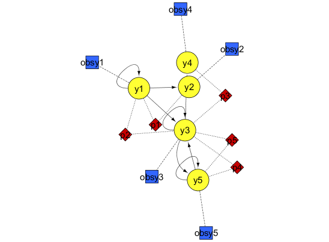

AMIGO_ContourP
Contents
Task description
- Plots contours of the Maximum Likelihood or Least Squares function by pairs of unknowns in the vicinity of a given value of the model unknowns.
This may help to visualize poor practical identifiability or the presence of suboptimal solutions.
Call AMIGO_ContourP from command line
It is recommended to keep all inputs in a 'problem_file'.m. ContourP task can then be called in two different ways:
1. Using the inputs structure:
> problem_file
> AMIGO_ContourP(inputs)
2. Using the input file:
> AMIGO_ContourP('problem_file') > AMIGO_ContourP('problem_file','run_ident')Example
TITLE: Thermal isomerization of alfa-pinene

clear; %============================ % RESULTS PATHS RELATED DATA %============================ inputs.pathd.results_folder='alpha_pinene';% Folder to keep results (in Results) for a given problem inputs.pathd.short_name='pinene'; % To identify figures and reports for a given problem inputs.pathd.runident='r1'; % [] Identifier used in order not to overwrite previous % results. May be modified from command line.'run1'(default) %============================ % MODEL RELATED DATA %============================ inputs.model.input_model_type='charmodelC'; % Model introduction: 'charmodelC'|'c_model'|'charmodelM'| % 'matlabmodel'|'sbmlmodel'|'blackboxmodel'|'blackboxcost inputs.model.n_st=5; % Number of states inputs.model.n_par=5; % Number of model parameters inputs.model.n_stimulus=0; % Number of inputs, stimuli or control variables inputs.model.names_type='custom'; % [] Names given to states/pars/inputs: 'standard' % 'custom'(default) inputs.model.st_names=char('y1','y2','y3','y4','y5'); % Names of the states inputs.model.par_names=char('p1','p2','p3','p4','p5'); % Names of the parameters inputs.model.stimulus_names=[]; % Names of the stimuli, inputs or controls inputs.model.eqns=... % Equations describing system dynamics. char('dy1=-(p1+p2)*y1',... % Time derivatives are regarded 'd'st_name'' 'dy2= p1*y1',... 'dy3= p2*y1-(p3+p4)*y3+p5*y5',... 'dy4= p3*y3',... 'dy5= p4*y3-p5*y5'); p1=5.93e-5; p2=2.96e-5; p3=2.05e-5; p4=27.5e-5; p5=4e-5; inputs.model.par=[p1 p2 p3 p4 p5]; % Nominal value for the parameters % These values may be updated during optimization %================================== % EXPERIMENTAL SCHEME RELATED DATA %================================== inputs.exps.n_exp=1; % Number of experiments inputs.exps.n_obs{1}=5; % Number of observed quantities per experiment inputs.exps.obs_names{1}=char('obsy1','obsy2','obsy3','obsy4','obsy5'); % Observables inputs.exps.obs{1}=char('obsy1=y1','obsy2=y2','obsy3=y3','obsy4=y4','obsy5=y5'); % Observation function inputs.exps.exp_y0{1}=[100 0 0 0 0]; % Initial conditions for each experiment inputs.exps.t_f{1}=36420; % Experiments duration inputs.exps.n_s{1}=9; % Number of sampling times inputs.exps.t_s{1}=[0 1230 3060 4920 7800 10680 15030 22620 36420]; % Sampling times %================================== % EXPERIMENTAL DATA RELATED INFO %================================== inputs.exps.data_type='real'; % Type of data: 'pseudo'|'real' inputs.exps.exp_data{1}=[ 100.0 0.0 0.0 0.0 0.0 88.35 7.3 2.3 0.4 1.75 76.4 15.6 4.5 0.7 2.8 65.1 23.1 5.3 1.1 5.8 50.4 32.9 6.0 1.5 9.3 37.5 42.7 6.0 1.9 12.0 25.9 49.1 5.9 2.2 17.0 14.0 57.4 5.1 2.6 21.0 4.5 63.1 3.8 2.9 25.7 ]; % Experimental data inputs.exps.error_data{1}=inputs.exps.exp_data{1}.*0.01; % Experimental noise (1%) %================================== % UNKNOWNS RELATED DATA %==================================
Select the parameters to be considered by ContourP
inputs.PEsol.id_global_theta='all'; % 'all'|User selected
In order to use AMIGO_ContourP you need to specify upper and lower bounds on the parameters as well as an initial guess
inputs.PEsol.global_theta_max=[1 1 1 1 1]; % Maximum allowed values for the paramters inputs.PEsol.global_theta_min= [0 0 0 0 0]; % Minimum allowed values for the paramters inputs.PEsol.global_theta_guess = inputs.model.par; % Any parameter values can be introduced here
More information regarding the inputs used in this example can be found here.
%================================ % CALL AMIGO2 from COMMAND LINE %================================ % It is recommended to keep all inputs in a 'problem_file'.m. % AMIGO2 ContourP task can be called as follows: % AMIGO_ContourP('problem_file','run_ident') or AMIGO_ContourP(inputs) AMIGO_Prep(inputs); AMIGO_ContourP(inputs);
***********************************
AMIGO2, Copyright @CSIC
AMIGO2_R2016a [Oct 2015]
***********************************
*Date: 10-Dec-2015
------>Pre processing....this may take a few seconds.
------>Checking inputs....
------> WARNING message
AMIGO_check_model: You did not specify inputs.model.exe_type, standard will be assumed
------> Generating C code ...
------> Mexing files....
Building with 'MinGW64 Compiler (C)'.
D:\AMIGO2_REPO_2014\AMIGO2R2016\Kernel\IVP_solvers\cvodes\C_src4Amigo\src\src_amigo\simulate_amigo_model.c: In function 'simulate_amigo_model':
D:\AMIGO2_REPO_2014\AMIGO2R2016\Kernel\IVP_solvers\cvodes\C_src4Amigo\src\src_amigo\simulate_amigo_model.c:330:16: warning: passing argument 1 of 'mexPrintf' from incompatible pointer type
mexPrintf(stderr,"\nSolver failed at flag = CVode(cvode_mem, tout, y, &t, CV_TSTOP_RETURN);. . .\n");
^
In file included from D:\AMIGO2_REPO_2014\AMIGO2R2016\Kernel\IVP_solvers\cvodes\C_src4Amigo\include\include_amigo/simulate_amigo_model.h:4:0,
from D:\AMIGO2_REPO_2014\AMIGO2R2016\Kernel\IVP_solvers\cvodes\C_src4Amigo\src\src_amigo\simulate_amigo_model.c:1:
C:\MATLAB_R2015b_64/extern/include/mex.h:202:27: note: expected 'const char *' but argument is of type 'struct FILE *'
LIBMWMEX_API_EXTERN_C int mexPrintf(
^
D:\AMIGO2_REPO_2014\AMIGO2R2016\Kernel\IVP_solvers\cvodes\C_src4Amigo\src\src_interface\interface_with_matlab.c: In function 'mexFunction':
D:\AMIGO2_REPO_2014\AMIGO2R2016\Kernel\IVP_solvers\cvodes\C_src4Amigo\src\src_interface\interface_with_matlab.c:200:17: warning: assignment from incompatible pointer type
stats_struct = mxGetPr(plhs[5]);
^
MEX completed successfully.
------>Files generated....
***********************************
AMIGO2, Copyright @CSIC
AMIGO2_R2016a [Oct 2015]
***********************************
*Date: 10-Dec-2015
------>Checking inputs....
------> WARNING message
AMIGO_check_model: You did not specify inputs.model.exe_type, standard will be assumed
------> Generating maximum likelihood plots for all model unknowns
-----------------------------------------------
Initial value problem related active settings
-----------------------------------------------
ivpsolver: cvodes
RelTol: 1e-09
AbsTol: 1e-09
MaxStepSize: Inf
MaxNumberOfSteps: 100000
------> Generating maximum likelihood contour plots for pairs of global unknowns
Generating contour plots for pair p1, p2...
Generating contour plots for pair p1, p3...
Generating contour plots for pair p1, p4...
Generating contour plots for pair p1, p5...
Generating contour plots for pair p2, p3...
Generating contour plots for pair p2, p4...
Generating contour plots for pair p2, p5...
Generating contour plots for pair p3, p4...
Generating contour plots for pair p3, p5...
Generating contour plots for pair p4, p5...
--------------------------------------------------------------------------
Experiment 1:
inputs.exp_data{1}=[
100 0 0 0 0
88.35 7.3 2.3 0.4 1.75
76.4 15.6 4.5 0.7 2.8
65.1 23.1 5.3 1.1 5.8
50.4 32.9 6 1.5 9.3
37.5 42.7 6 1.9 12
25.9 49.1 5.9 2.2 17
14 57.4 5.1 2.6 21
4.5 63.1 3.8 2.9 25.7
];
<strong>
------>Results (report and struct_results.mat) and plots were kept in the directory:
</strong><strong>D:\AMIGO2_REPO_2014\AMIGO2R2016\Results\alpha_pinene\Contours_pinene_r1</strong>
Click <a href="matlab: cd('D:\AMIGO2_REPO_2014\AMIGO2R2016\Results\alpha_pinene\Contours_pinene_r1')">here</a> to go to the results folder or <a href="matlab: load('D:\AMIGO2_REPO_2014\AMIGO2R2016\Results\alpha_pinene\Contours_pinene_r1\strreport_pinene_r1.mat')">here</a> to load the results.
See also
References
Model was taken from:
R.E. Fuguitt and J. E. Hawkins. Rate of thermal isomerization of alfa-pinene in the liquid phase. J. A. C. S. 1947, 69:461
%AMIGO_htmldoc_inputs(inputs,fullfile(pwd,'html','contourex1.html'));